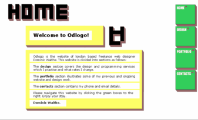
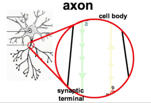
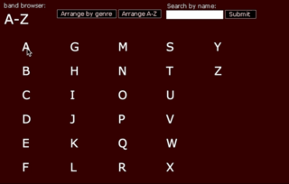
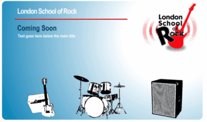
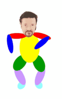
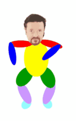

Highlights from my time as a web designer and Flash animator.
Posted on September 22, 2016 at 9:52 AM
Over a period of 10 years I was a html developer and Flash designer working freelance to support my studies. Several of the websites I worked on have since moved on and some of the projects I worked on were never finished. In this gallery I showcase some of my designs as animated gifs that highlight and maintain for posterity my achievements in this area.
Above Odlogo is the pseudonym for my online web design presence. Over a number of years I experimented with different website designs and logos. Here is one such bright logo.
Above Another logo I created for Odlogo, this time with a softer appeal. These like all the animations I worked on in this time were created using Macromedia Flash. Macromedia was later acquired and is still owned by Adobe.


Above Left Along with logo designs there were some pretty fancy interactive websites which showcased by abilities to manipulate physical building blocks dynamically. Above Right I used these dynamic techniques to build websites such as the one for the rock group Soulcord giving an innovative twist.

Above Left Now on to more abstract animations. I often would produce small self-contained animations which allowed me to experiment with styles. This is one of my favourites entitled 'Clouds'. Above Right To spice up some of my presentations at the time I would often integrate Flash animations that explained some piece of science through a convenient animation. This work later led onto me developing a number of scientifically themed animations which I showcased on youtube: click to visit youtube.

Above Left For a while I was developing online band managements tools. This was when Myspace was in its infancy and before SoundCloud existed.. I wanted to develop Flash tools for exploring and playing artist's music. Above Right Always keen to help make a good party I would develop Flash animations for the projector to give the party a christmassy back-drop.

Above Left I was the lead web-designer for John Parkinson Agency, a photography management company (John's latest website ). John has moved on since but for many years I was the technical guy keeping the site running and updated. Above Right A project by my brother to develop a scheme for bringing together young artists in London.
 

Above Left A Flash based mp3 player. This might not seem special, but at the time I developed this before anyone else. Above Right When Ricky Gervais became famous for his dancing in the Office I wanted to create a Flash parody. I am still not sure why I commited to this as long as I did.
It is with great pleasure that I present this gallery which future-proofs these pieces of work. Each of these pieces was very useful for me to test and develop my skills with programming and also to develop my own visual style. Flash, as a technology, seems to be falling increasingly out of favour and so I am very happy to provide snippets of my work here in the form of gif animations.